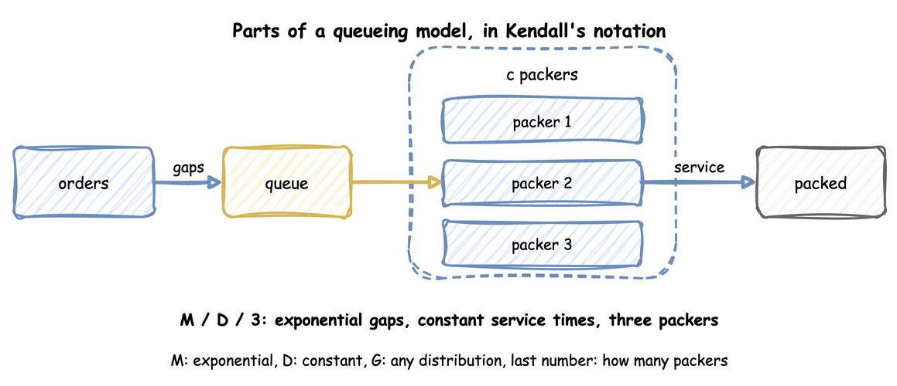

Queueing Basics
A queue forms when orders arrive faster than the packers can pack them, even for a short time. How long an order waits depends on more than the averages. This page explains the few results of queueing theory that a simulation study uses. Each one is explained with the packing shop of the tutorial and checked against a run of it. The numbers on this page come from queueing_basics.py, which asserts every one of them.
What You Will Learn
- how to write the shop as a queueing model, such as M/D/3;
- how to work out utilisation, and why the queue settles only below 1;
- what Little's law says, why it holds, and how to check a run's statistics with it;
- why waits grow fast near full use, and less with several packers;
- how the spread of the gaps and the packing times lengthens waits;
- how to find the bottleneck of a network of tasks;
- how to check a formula against runs of the shop.
Kendall's Notation
In the Tutorial
A queueing model has three parts: the arrivals, the queue, and the servers that serve them. In the shop, the arrivals are the orders, the queue is the line in front of the packers, and the servers are the packers. In desflow a server is one unit of a resource, so the packers resource with current_cap: 3 has three servers. The diagram shows the three things a model must say: how far apart orders arrive, how long a packer takes, and how many packers there are.

Kendall's notation writes these three things as arrivals/service/servers. The letter c stands for the number of servers. The busy hour of Queues and Capacity is M/D/3: exponential gaps between orders, a constant packing time of 1.5 seconds, and three packers. Each letter names a distribution:
Mis an exponential distribution. Gaps between orders placed independently of each other are exponential, and such arrivals are called a Poisson flow.Dis a constant time, the same for every order.Gis any distribution. Measuring a Run packs with 40 measured times, so its shop is M/G/3.
So M/M/1 has exponential gaps, exponential service times and one server. M/D/1 has constant service times instead, and D/M/1 has constant gaps and exponential service times. When a model leaves out the further terms, they have their defaults: the queue has room for any number of orders, the orders come from an unlimited population, and they are served in the order they arrive.
Why It Matters
Each formula on this page holds for some models and not others. The notation says which one applies. A wait worked out with the M/M/3 formula for an M/D/3 shop is about twice too long, as Check a Formula Against the Shop measures.
How to Use It
Write the letters for the model before you use a formula: what the gaps are, what the packing times are, and how many units the resource has. desflow explain does the same for each resource. It names the formula it used, or says why none applies. For the busy hour of Queues and Capacity, an M/D/3 shop, it reports "no closed formula for c > 1 with non-exponential times", as the output under Utilisation shows.
What the Result Means
A model with a letter G, or with several servers and a letter other than M, has no exact formula for its wait. The run of the shop is then the only measure of the wait, and a formula gives at best an approximation to check it against.
Utilisation
In the Tutorial
Utilisation is the share of time a server is busy. In the busy hour of Queues and Capacity, orders arrive at 1.8 a second and each takes 1.5 seconds to pack. That is 1.8 × 1.5 = 2.7 seconds of packing arriving every second. Three packers share it, so each is busy 2.7 ÷ 3 = 0.9 of the time, or 90%.
In general, utilisation is the arrival rate times the mean service time, divided by the number of servers. Formulas and the desflow explain tables write it with these symbols:
- λ (lambda) is the arrival rate, 1.8 orders a second.
- μ (mu) is the service rate of one server, one over the mean service time: 1 ÷ 1.5 = 0.667 orders a second.
- c is the number of servers, 3.
- ρ (rho) is the utilisation: ρ = λ ÷ (c × μ) = 1.8 ÷ (3 × 0.667) = 0.9.
Why It Matters
Utilisation decides whether the queue settles at all. There are three cases:
- Below 1, the packers have spare time on average. The queue grows and shrinks, and its average length settles.
- At exactly 1, the packers have no spare time. The queue does not settle, and it drifts longer over time. The one exception is constant gaps with constant packing times, where each order arrives just as a packer becomes free.
- Above 1, orders arrive faster than the packers can pack them. The queue grows without limit in every case.
Queues and Capacity runs the busy hour with 1 to 4 packers. One packer (utilisation 2.7) and two (1.35) leave mean waits of 1127.21 and 426.31 seconds, and the waits keep growing with the length of the run. Three packers (0.9) give 1.27 seconds and four (0.675) give 0.20 seconds.
How to Use It
Work out utilisation for each resource before you run the model. desflow explain does it from the model, without running it:
desflow explain and analyze() do not support low-level models, because a low-level model makes its links between arrivals, tasks and resources in SimPy code as it runs. Work out ρ by hand, or explain the YAML or builder form of the model.
The status column is OK below 0.85, CONGESTED from 0.85 and UNSTABLE from 1.
What the Result Means
A utilisation of 1 or above means the design needs more capacity, and no run length gives a stable answer. A utilisation below 1 means the queue settles, but not that the wait is short: Waits Near Full Use shows how long it can be at 0.9.
A run measures utilisation too, as utilization_avg, a percentage. Measuring a Run's busy hour measured 86.56%, below the 0.9 of the formula. The formula with that run's own figures gives the same share: 6,250 orders finished in 3,600 seconds is 1.736 a second, and its packing times averaged 1.4954 seconds, so 1.736 × 1.4954 ÷ 3 = 0.865. That hour's random gaps were a little longer than the mean of 1 ÷ 1.8 seconds:
Little's Law
In the Tutorial
Little's law says that, in a system that settles, the average number of orders in it equals the arrival rate times the average time an order spends in it: L = λ × W. It needs no assumption about the gaps, the packing times or the order of service. It holds for the queue alone, for the packers alone, and for the whole shop.
In the busy hour of Measuring a Run, 6,250 orders finished in 3,600 seconds, so λ = 1.736 orders a second. The mean wait was 1.3817 seconds, so λ × W = 1.736 × 1.3817 = 2.399. The time-weighted average queue length was 2.406 orders. The two figures agree.
Why It Matters
The law holds because both sides count the same total. Add up, over the hour, the seconds each order spent in the queue. Counted second by second, the total is the number waiting at each moment, added over 3,600 seconds: L × 3,600. Counted order by order, it is the number of orders times their mean wait: λ × 3,600 × W. The two totals are equal, so L = λ × W.
desflow measures the queue length, the arrival count and the wait separately. If they do not agree, one of them is wrong. That makes the law the first check on a model's statistics, before any result is trusted.
How to Use It
Read the five statistics at the end of a run, and compare L with λ × W for the queue and for the whole shop. The number in the whole shop is the queue plus the orders being packed, and the orders being packed are the three packers times their utilisation. This function does the arithmetic on the readings of any run of the shop:
Each tab runs the Measuring a Run hour and reads its statistics:
Put these five values into the arithmetic of littles_law, with 3 packers and 3,600 seconds.
| docs/snippets/pages/queueing_basics.py:builder | |
|---|---|
Then littles_law(readings, 3600).
All three give the same figures:
What the Result Means
The queue gives 2.406 against 2.399, and the whole shop 5.003 against 4.995. Both agree within 0.3%. The small difference comes from the 11 orders still in the shop when the hour ended: their time counts in L, but their wait is not yet in W. In a long run of a settled shop, a difference of more than a few percent means a statistic is wrong, for example a task that keeps its packer after it finishes. Checking and Validating uses the law as one of its checks.
Waits Near Full Use
In the Tutorial
Parameter Sweeps runs the busy hour with three packers and the measured packing times at four arrival rates, 20 replications each. At 1.6 orders a second (utilisation 0.8) the mean wait is 0.97 seconds. At 1.8 (utilisation 0.9) it is 2.48 seconds. At 1.9 (utilisation 0.95) it is 5.55 seconds. A rise of 6% in the rate more than doubles the wait.
Why It Matters
For one server with exponential gaps and service times (M/M/1), the mean wait in the queue has a closed form: utilisation ÷ (1 − utilisation) × the mean service time. With constant service times (M/D/1) it is exactly half. The first part, utilisation ÷ (1 − utilisation), grows faster and faster as utilisation nears 1: it is 1 at 0.5, 9 at 0.9 and 19 at 0.95. The bars show this for one packer with a mean packing time of 1.5 seconds:

So a design that only keeps utilisation below 1 is not enough. A shop that is stable can still make orders wait a long time, and a small change in demand changes the wait a great deal.
How to Use It
The formulas are short enough to compute. These functions are the ones the rest of the page uses:
desflow explain gives the same figure for a one-packer model: for the shop of First Simulation, M/D/1 at utilisation 0.75, its Wq column reads 2.25 seconds.
What the Result Means
Near full use, the wait depends strongly on the exact arrival rate. Before trusting a wait at a utilisation of 0.9 or more, check how good the estimate of the rate is, as Parameter Sweeps does. A run near full use also needs to be long before its mean wait settles, as Output Analysis explains.
Several Packers
In the Tutorial
The busy hour has three packers with constant packing at utilisation 0.9. Ten long runs of it give a mean wait of 2.05 seconds, as Check a Formula Against the Shop shows. One packer with constant packing at the same utilisation would make orders wait 6.75 seconds on average, by the M/D/1 formula above. Three packers sharing one queue wait far less at the same utilisation.
Why It Matters
With several packers sharing one queue, an order waits only when every packer is busy. For exponential gaps and service times (M/M/c), the share of orders that find every packer busy is the Erlang C formula. The mean wait in the queue is that share divided by (c ÷ the mean service time − the arrival rate). The erlang_c and mmc_wait functions above compute it.
How to Use It
Compare designs at the same utilisation with the formulas. With a mean packing time of 1.5 seconds, one packer at utilisation 0.8 gives a mean wait of 6 seconds. Three packers at utilisation 0.8 give about 1.6 seconds:
What the Result Means
Pooling packers into one queue shortens the wait at the same load. A design question such as "one fast packer or three slower ones" needs the wait, not only the utilisation. The formula covers exponential times only, so the shop's own runs answer it for other times.
Variation Lengthens Waits
In the Tutorial
Choosing Inputs runs the busy hour with four candidate packing times, all with a mean of 1.5 seconds. The mean waits are 1.27 seconds with constant times, 1.28 with triangular, 1.35 with the measured times and 2.37 with exponential. The same mean with a wider spread gives a longer wait.
Why It Matters
Kingman's formula gives an approximate mean wait for one server with any distributions. It measures the spread of each input by its coefficient of variation, the standard deviation divided by the mean, called variation for short. The variation is 1 for an exponential distribution and 0 for a constant one. The mean wait is the product of three parts:
- utilisation ÷ (1 − utilisation), which grows quickly as utilisation nears 1;
- (arrival variation² + service variation²) ÷ 2, the effect of the spread;
- the mean service time.
With exponential gaps (variation 1) and constant service (variation 0), the middle part is 0.5. The formula then gives half the M/M/1 wait, which is the M/D/1 result above. Variation in the gaps counts as much as variation in the packing times. When both variations are 0, the formula gives no wait at all.
How to Use It
The kingman_wait function above computes it. Use it to judge how much the choice of an input distribution matters before you fit one. Choosing Inputs shows how to compare the candidates by running each.
What the Result Means
A model whose inputs are replaced by their averages has no variation, so it shows no queue while utilisation is below 1. Its waits are too short. Common Mistakes lists this among the errors that distort a result.
Flow Balance and the Bottleneck
In the Tutorial
Queues and Capacity adds a checker to the shop. Orders arrive at 1.6 a second, every packed order is checked, and a tenth of the checked orders go back to packing. Four packers take 1.5 seconds an order, and one checker takes 0.4 seconds on average.
Why It Matters
In a network of tasks, work reaches a task in two ways: as new work, and as work routed to it from other tasks. The rate into a task is the sum of the two. This is flow balance. For packing, the rate is 1.6 + 0.1 × the rate into packing. Solving for it gives 1.6 ÷ (1 − 0.1) = 1.6 ÷ 0.9 = 1.778 orders a second. Every packed order goes to the checker, so the checker receives the same 1.778.
Each resource's utilisation follows from its rate. The four packers have 1.778 × 1.5 ÷ 4 = 0.667. The checker has 1.778 × 0.4 = 0.711. The resource with the highest utilisation is the bottleneck, here the checker. It is the first to reach full use when demand grows, and adding units anywhere else does not raise the most the shop can handle.
How to Use It
Work out the rate into each task, then each resource's utilisation:
desflow explain does the same from the model and names the bottleneck:
It ends its resource tables with Bottleneck: checkers.
desflow explain does not support low-level models. Explain the YAML or builder form of the network.
What the Result Means
Add capacity at the bottleneck first. Here a second checker lowers the checker's utilisation to 0.356, while a fifth packer leaves the checker at 0.711 and the shop no faster. Rework raises the load on every task it passes through, so a model without it underestimates every utilisation.
Check a Formula Against the Shop
In the Tutorial
The busy hour with exponential packing times is M/M/3 at utilisation 0.9. The Erlang C formula gives a mean wait of 4.083 seconds. Ten one-hour runs of the shop measure 4.784 ± 1.301 seconds, so the formula lies within the interval of the runs.
Why It Matters
A formula and a run that agree check each other. The formula shows that the model is built as intended, and the runs show that the formula applies. A model that disagrees with a formula on a case the formula covers has a fault in its logic or its statistics.
How to Use It
desflow explain --verify runs the model and compares each measure with the analysis:
This shop takes the gaps and the packing times as exponential or constant by choice:
This function runs ten replications, each leaving out its first 2,000 seconds, and returns the mean wait with its 95% half-width:
--verify does not support low-level models. replicate runs a LowLevelModel the same way, as Replications shows, and its mean and half-width compare with a formula as in the Builder tab.
The Builder tab's checks compare each formula with the runs, and pass when the formula lies within the interval:
The busy hour itself is M/D/3, which has no exact formula. For one packer, constant service halves the M/M/1 wait. This check compares the M/D/3 runs with half the M/M/3 wait, as an approximation:
These are 10 runs of 20,000 seconds, each without its first 2,000 seconds, not one-hour runs.
Kingman's formula is an approximation, and this check shows where it is not exact. Constant gaps of 2 seconds with exponential service (D/M/1) at utilisation 0.75:
| docs/snippets/pages/queueing_basics.py:dm1 | |
|---|---|
What the Result Means
Where a formula is exact, as for M/M/1 and M/M/c, it lies within the interval of the runs. Half the M/M/3 wait is close for the M/D/3 busy hour. Kingman's formula lies outside the interval for D/M/1: it is accurate near full use and for the cases above, and a rough guide elsewhere. A check that fails on a case the formula covers points to a fault in the model. A check that fails outside the formula's cases says only that the formula does not apply.
Key Takeaways
- Write the model in Kendall's notation first, to know which formulas apply.
- Work out utilisation for every resource before a run. At 1 or above, the answer is more capacity.
- Check a run's statistics with Little's law before trusting any result.
- Expect long waits near full use, and longer ones when gaps or packing times vary.
- Find the bottleneck with flow balance, and add capacity there first.
- Check the model against a formula on the cases the formula covers. The simulation answers the cases it cannot: several resources, priorities, breakdowns and changing demand.
Sources
- Wikipedia: Kendall's notation, Little's law, Kingman's formula, the Erlang C formula and the Jackson network.
- The explanations and the checks are our own.